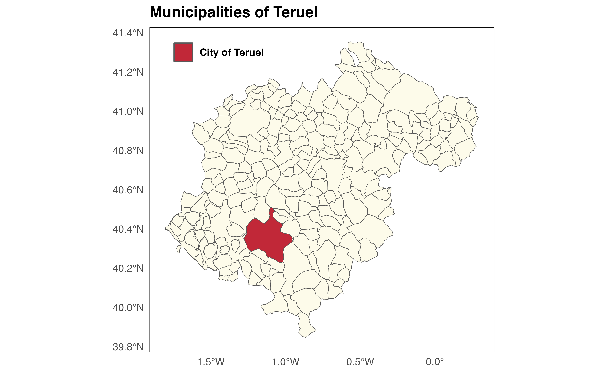

A sf object including all municipalities of Spain as provided by GISCO (2019 version).
Format
A POLYGON data frame (resolution: 1:1million, EPSG:4258) object with
8,131 rows and fields:
- codauto
INE code of each autonomous community.
- ine.ccaa.name
INE name of each autonomous community.
- cpro
INE code of each province.
- ine.prov.name
INE name of each province.
- cmun
INE code of each municipality.
- name
Name of the municipality.
- LAU_CODE
LAU Code (GISCO) of the municipality. This is a combination of cpro and cmun, aligned with INE coding scheme.
- geometry
geometry field.
Source
https://ec.europa.eu/eurostat/web/gisco/geodata/reference-data/, LAU 2019 data.
See also
Other datasets:
esp_codelist,
esp_nuts.sf,
esp_tiles_providers,
pobmun19
Other municipalities:
esp_get_capimun(),
esp_get_munic()
Examples
data("esp_munic.sf")
teruel_cpro <- esp_dict_region_code("Teruel", destination = "cpro")
teruel_sf <- esp_munic.sf[esp_munic.sf$cpro == teruel_cpro, ]
teruel_city <- teruel_sf[teruel_sf$name == "Teruel", ]
# Plot
library(ggplot2)
ggplot(teruel_sf) +
geom_sf(fill = "#FDFBEA") +
geom_sf(data = teruel_city, aes(fill = name)) +
scale_fill_manual(
values = "#C12838",
labels = "City of Teruel"
) +
labs(
fill = "",
title = "Municipalities of Teruel"
) +
theme_minimal() +
theme(
text = element_text(face = "bold"),
panel.background = element_rect(colour = "black"),
panel.grid = element_blank(),
legend.position = c(.2, .95)
)
